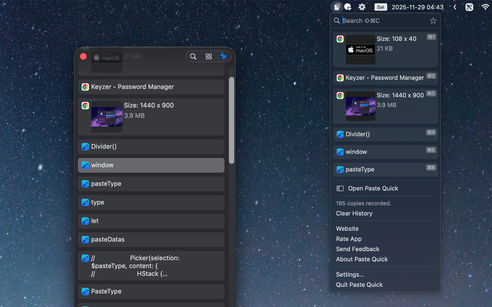
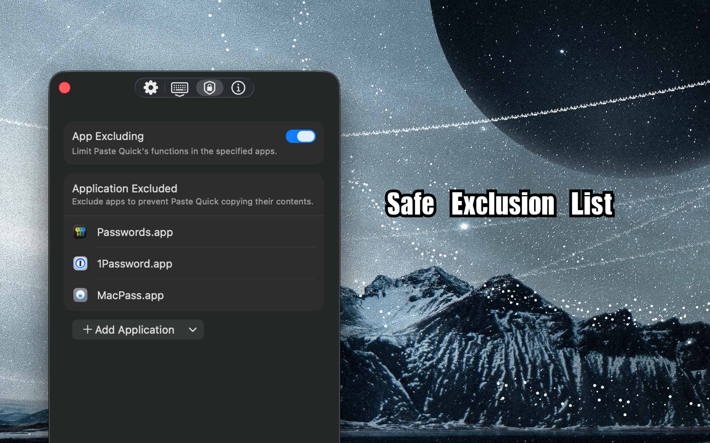
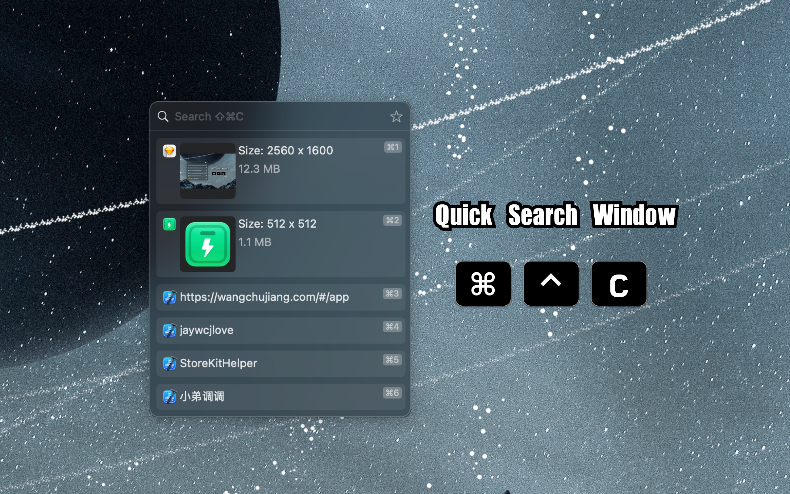
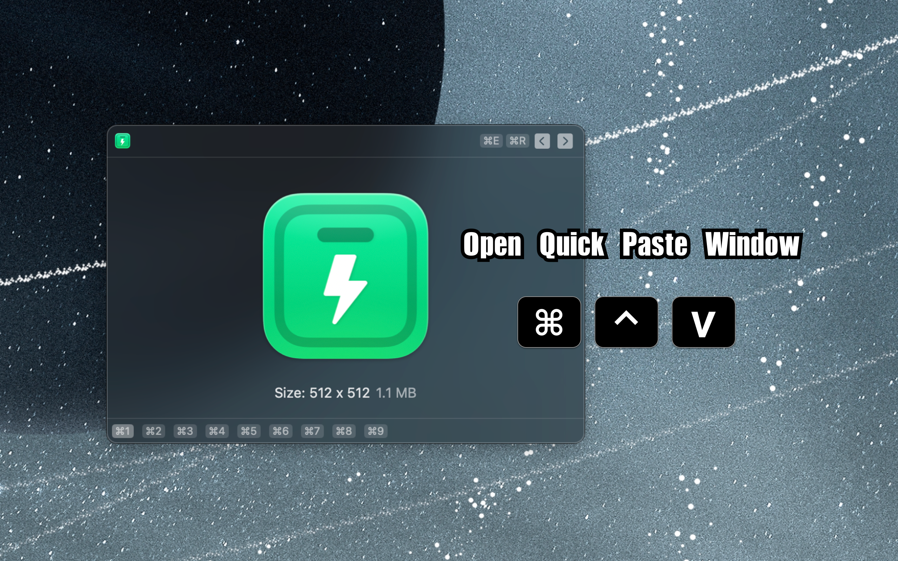

minimum OS requirement: macOS 14.0
PasteQuick is a privacy-focused and simple clipboard management tool designed to help you efficiently manage various temporary data such as text, links, images, and code. It records everything you copy or cut and saves it in a history list, allowing you to quickly find and use clipboard records, greatly improving your productivity.


- Privacy Protection: All clipboard history is stored locally on your device, with support for excluding specific applications from being recorded, ensuring data security and privacy.
- Multimedia Preview: PasteQuick supports image thumbnail previews, allowing you to easily and quickly view copied images.
- Customization Options: The tool offers customizable list display options, allowing you to hide or show content based on your needs, fitting different usage scenarios.


PasteQuick is continuously being optimized and developed to bring more convenience to your daily work. We welcome your valuable feedback and suggestions!
AI Direct Access to Clipboard
PasteQuick is powered by the Model Context Protocol (MCP), allowing AI assistants to directly access your clipboard.
AI can retrieve, read, summarize, and analyze clipboard content, making it easy to build custom AI-powered workflows. Your clipboard data, now empowered by AI.
Configure with Grok
# Add the PasteQuick MCP server
$ grok mcp add pastequick \
--transport stdio \
--scope user \
-- "/System/Applications/PasteQuick.app/Contents/MacOS/PasteQuick" --mcp
# Remove the PasteQuick MCP server
$ grok mcp remove pastequick
# List configured MCP servers
$ grok mcp list
# Diagnose the connection status of the PasteQuick MCP server
$ grok mcp doctor pastequick
You can also configure it directly in ~/.grok/config.toml:
[mcp_servers.pastequick]
command = "/Applications/PasteQuick.app/Contents/MacOS/PasteQuick"
args = ["--mcp"]
enabled = true